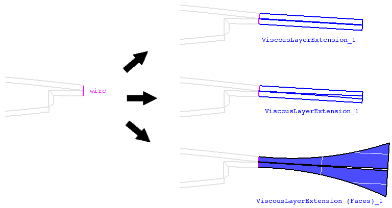

cfdmsh 4.0 documentation
cfdmsh 4.0 documentation cfdmsh 4.0 documentation


Extends a 2D trailing edge viscous layer.
The input wire is first closed with an additional edge linking its boundaries. Then, this closing edge is extruded perpendicular to the wire plane normal direction. The normal of the extrusion gives the extension direction. The closing edge is then translated and its length is scaled according to the ratio given by the user. The translated edge is then split into edges with the same proportions as in the source wire, excepted that the source middle edge length is first multiplied by the scale factor given by the user before being "projected" on the ending edge. Finally, edges linking the source wire and the split ending edges are created and smoothed.
The user can also ask for the creation of faces linking internal and side extension edges.
def ExtendViscousLayer( dist, wire = None, face = None, plane = None, scale = 1, ratio = 1, style = "smooth", coef = 0.5, tol = 1e-7, rev = False, add = True, infa = False, dim = 1 ):

| Name | Description | Type | GUI selection [?] | Selection by name [?] | Recursive [?] | Default value |
|---|---|---|---|---|---|---|
| dist | The length of the extension. | Float | - | - | - | - |
| wire | The input wire. | Wire | yes | yes | yes | None |
| face | See here. | Face | - | yes | - | None |
| plane | See here. If the input edge is straight, the default plane is the OXY plane. | Face | - | yes | - | None |
| scale | The scale coefficient applied on the source middle edge before being "projected" on the end wire. | Float | - | - | - | 1 |
| ratio | The ratio between the ending wire and the input wire lengthes. | Float | - | - | - | 1 |
| style | See here. | String | - | - | - | "smooth" |
| coef | A coefficient influencing the curvature of the extension edges (0 < coef < 1). The greater it is, the greater is the curvature. |
Float | - | - | - | 0.5 |
| tol | See here. | Float | - | - | - | 1e-7 |
| rev | See here. | Boolean | - | - | - | False |
| add | See here. | Boolean | - | - | - | True |
| infa | See here. | Boolean | - | - | - | False |
| dim | See here. | Integer | - | - | - | 1 |
| dim Value [?] | single Value [?] | Type | Number | Name |
|---|---|---|---|---|
| 1 | - | Compound of Edges | 1 | "ViscousLayerExtension" |
| 2 | - | Shell or Compound of Faces | 1 | "ViscousLayerExtension (Faces)" |
from cfdmsh import * # To adapt to the cfdmsh installation method
vertex1 = geompy.MakeVertex(-10, 75, 0)
vertex2 = geompy.MakeVertex(0, 10, 0)
vertex3 = geompy.MakeVertex(0, -10, 0)
vertex4 = geompy.MakeVertex(-10, -75, 0)
wire = geompy.MakePolyline([vertex1, vertex2, vertex3, vertex4])
AddToStudy(wire, "wire")
extension = ExtendViscousLayer(300, wire)
extension = ExtendViscousLayer(300, wire, rev = True, scale = 5)
extension = ExtendViscousLayer(300, wire, rev = True, ratio = 1.5)
extension = ExtendViscousLayer(300, wire, rev = True, ratio = 1.5, coef = 0.75)
The input wire has to contain two or three connected edges.
In addition, if the input wire is straight, it is also necessary to set the face or the plane argument so as to give the function the extension direction
tougeron-cfd.com © 2016